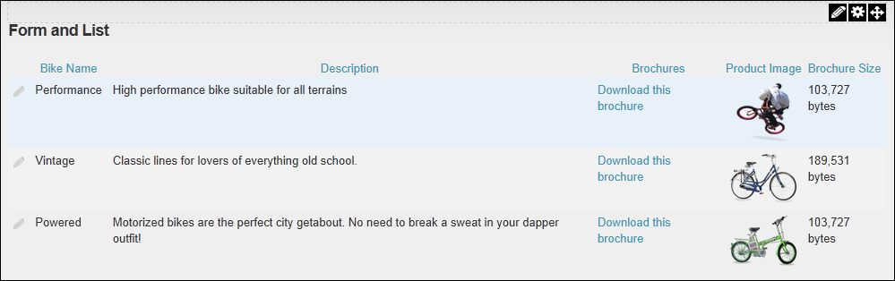
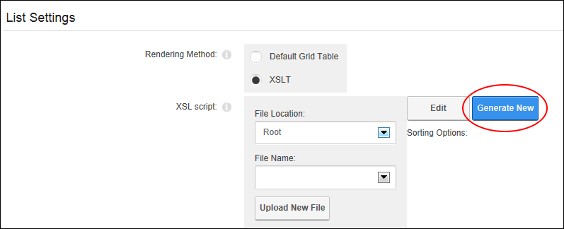
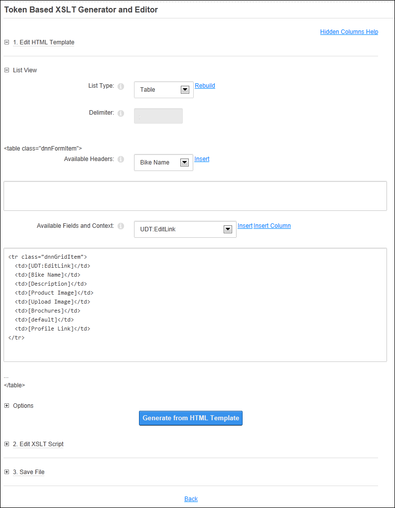
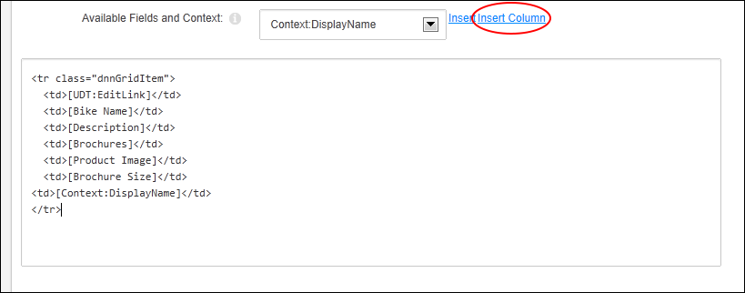
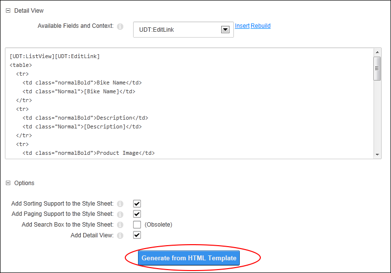
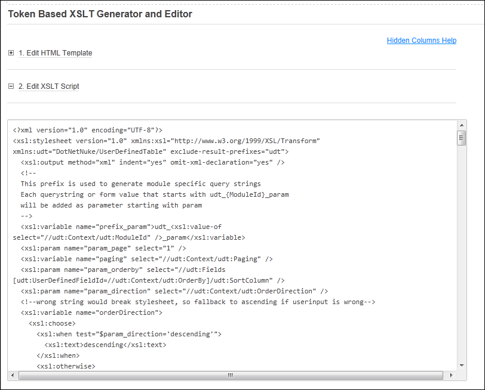
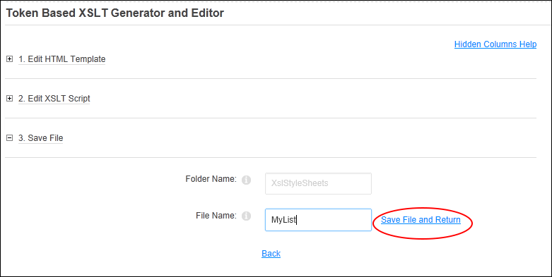
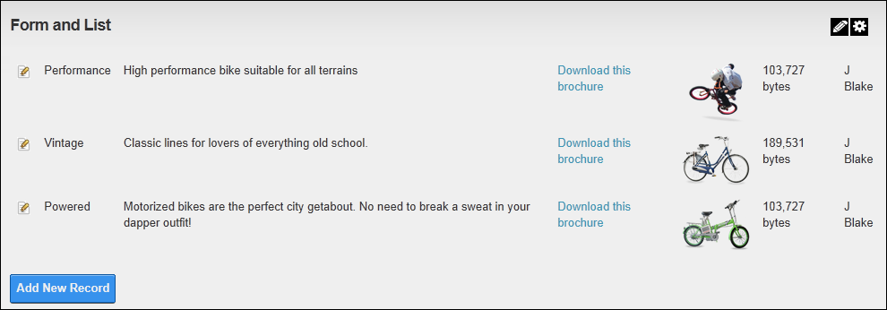

Generating a New XSL Transformation
How to generate a new User Defined XSL Transformation file for a self made stylesheet for the Form and List module. In the below example, a column that displays the name of the user who created the record will be added to the right of this existing list design by inserting the DisplayName of the user who is currently logged in.
Here is the module prior to generating the new XSL transformation:

- Select
 Form and List Configuration from the Form and List module actions menu.
Form and List Configuration from the Form and List module actions menu.
- Select the Page Related Settings tab.
- Go to the List Settings section.
- At Rendering Method, select XSLT.
- At XSL Script, click the Generate New button to open the Token Based XSLT Generator and Editor page.

- Go to the 1. Edit HTML Template section. The text box displays the HTML for a table which includes an Edit Link and each of the columns which have added to the table.

- In the List View section, complete the following to edit the displayed HTML to create your custom XSL transformation:
- At List Type, select the layout for the content. The following options are available:
- Table: Renders all records inside a single table.
- Division: Renders each record inside its own div tag. E.g. div
- Paragraph: Renders each record inside its own paragraph tag. E.g. p
- Ordered List: Renders each record inside its own list item tag. E.g. li
- Unordered List: Renders each record inside its own list item tag. E.g. li
- Nothing: Renders all records separated by the delimiter (as selected at Delimiter below.)
- In the Delimiter text box, view/edit the characters or tags used as a column delimiter. The default value is a semi-colon ( ; ). This is the only option when Table is selected as the List Type.
- At Available Fields and Context, insert one or more fields or columns as follows:
- To insert a field:
- Click inside the text box.
- Select a field from the drop down list.
- Click the Insert link.
- To insert a column:
- Click inside the text box in the location where you want to insert the column.
- Select a field from the drop down list. E.g. Context:DisplayName
- Click the Insert Column link. This option is only enabled when Table is set as the List Type.

- Optional. Maximize
 the Options section, complete the following optional settings:
the Options section, complete the following optional settings: - Optional. At Add Sorting Support to the Style Sheet, to sort displayed records according to sort column and direction specified in Manage User Defined Table.
- Optional. At Add Paging Support to the Style Sheet, to add a pager for the displayed list. Page size is specified in Manage User Defined Table.
- Optional. At Add Detail View, to add a link to an additional Detail View, showing the columns of the current record only. This displays the current layout of the Detail View page. You can manually edit the information or perform the following:
- To insert a new field:
- Click inside the Text Box where you want to insert the field.
- At Available Fields and Content, select the field you wish to insert.
- Click the Insert link.
- To restore the default Detail View template:
- Click the Rebuild link to the left.
- Click the Generate from HTML Template button.

- Optional. In the 2. Edit XSLT Script section, view and edit the XSLT script that is now displayed if required.

- Go to the 3. Save File section.
- In the File Name text box, enter a file name.
- Click the Save File and Return link.

- Click the Save Configuration and Return link to return to the module.
Here is the module after generating the new XSL transformation:

Tip: Click the Rebuilt link in the "1. Edit HTML Template" section to rebuild the HTML template if required. Note: All changes will be lost.